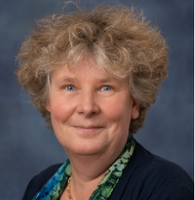
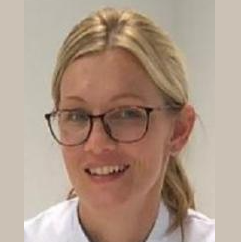

De huisartsopleiding van het LUMC heeft de ouderenzorg als één van de speerpunten in het curriculum omarmt. Dit is simpelweg omdat dit zowel een enorm relevant onderwerp is voor huisartsen, als logisch is gezien de aandacht vanuit PHEG voor onderwijs, opleiding en onderzoek op het gebied van ouderen. In de praktijk kan de samenwerking tussen de huisartsopleiding en SOOL veel beter worden uitgewerkt door te kijken naar een gezamenlijke module waarin aios van beide opleidingen samen leren, en daarmee van elkaar leren en elkaars perspectief leren kennen. De beginstappen zijn genomen in 2021 en er zal nog best wat georganiseerd moeten worden om dit voor elkaar te krijgen, maar er is veel vertrouwen dat dit gaat lukken.
Veelbelovend

prof. dr. Jacobijn Gussekloo, huisarts
Meer en meer is duidelijk dat specialisten ouderengeneeskunde specifieke expertise hebben die onmisbaar is voor thuiswonende ouderen met complexe problematiek. Het gaat hier dan niet alleen om de brede inhoudelijke medische expertise, maar juist ook om de expertise in het organiseren van de interdisciplinaire zorg die nodig wordt als de problematiek van ouderen thuis complex wordt. Ook het begeleiden van een geleidelijke overgang van thuis naar een eventuele opname in het verpleeghuis is hier bij een waardevolle toevoeging, voor ouderen, mantelzorgers en professionals.
Voor eerstelijns zorgverleners voor ouderen vraagt dit om een aantal belangrijke veranderingen. Immers, de specialist ouderengeneeskunde moet zich thuis gaan voelen in de eerste lijn, en de zorgverleners in de eerste lijn moeten deze relatief nieuwe speler omarmen. Huisartsen en specialisten Ouderengeneeskunde gaan hierin steeds samenwerken als medische professionals in de eerstelijn. Dit kan worden ingevuld in een consultatieve rol voor de specialist ouderengeneeskunde, maar ook in de rol van behandelaar. Landelijk zijn beleidsmakers en bijvoorbeeld verzekeraars hierover volop in conclaaf, en wordt advies na advies geschreven.
Gericht op deze situatie, werken specialisten ouderengeneeskunde en huisartsen binnen de afdeling Public Health en Eerstelijnsgeneeskunde steeds meer samen. Dit gebeurt niet alleen binnen het wetenschappelijk onderzoek, maar ook steeds meer in het onderwijs. Hierbinnen is dan nog specifieke aandacht voor deze samenwerking in de opleidingen tot specialist ouderengeneeskunde, de opleiding tot huisarts en de nascholing in de vorm van de kaderopleiding Eerstelijns Ouderengeneeskunde.
Het is echt veelbelovend om te zien hoe bijvoorbeeld onderwijsdelen in de beide opleidingen tegelijkertijd worden gegeven en gevolgd door specialisten ouderengeneeskunde en huisartsen. Persoonlijk kennismaken, ambities delen, onderwijs samen maken en volgen en zo elkaars expertises leren begrijpen zal bijdragen aan meer samenwerking in het veld. Vernieuwingen en aanscherpingen binnen de curricula van de beide opleidingen van het onderwijs over ouderengeneeskunde in de eerste lijn bereiden de AIOS hier al op voor.
Naast het opleiden van nieuwe collega’s in deze nieuwe samenwerking, zijn er natuurlijk ook nog veel ervaren collega’s die werken in het verpleeghuis en de eerste lijn. Ook voor hen heeft deze nieuwe ontwikkeling invloed op het type en de inhoud van het werk. We zijn er trots op dat ieder jaar rond 20 specialisten ouderengeneeskunde en huisartsen gezamenlijk starten aan de kaderopleiding. Onder auspiciën van het NHG en Verenso worden zij in twee jaar opgeleid tot kaderartsen eerstelijns ouderengeneeskunde. Met deze kennis en expertise bouwen zij verder aan de gaande innovatie in de eerstelijns ouderengeneeskunde. In innovatieprojecten worden nieuwe vormen van samenwerking uitgeprobeerd en geëvalueerd - een echte proefvijver.
Door deze steeds intensievere interdisciplinaire scholing dragen we een stevig steentje bij aan de innovatie van de eerstelijns ouderengeneeskunde. In dit intrigerende werkveld is ieders expertise noodzakelijk om goede zorg te geven aan ouderen thuis met complexe problematiek. Daarom is ‘samen werken door samen scholen’ het belangrijkste uitgangspunt voor het interdisciplinaire onderwijs binnen de afdeling Public Health en Eerstelijns Geneeskunde en de AGE campus Leiden.
Oud is altijd de ander
prof. dr. David van Bodegom, Leyden Academy on Vitality and Ageing
Mensen hebben het vaak over ouderen. Alsof het een groep mensen is die allemaal hetzelfde zijn. Maar als er een groep mensen is die onderling juist veel verschillen, dan zijn het ouderen. Niet alleen hebben hun persoonlijkheden zich gedurende de levensloop heel eigen ontwikkeld, ook hun vitaliteit en gezondheid zijn heel verschillend. Zijn alle jongeren over het algemeen gezond, bij de ouderen is er veel verschil. De ene oudere is met 75 nog kwiek en zeer vitaal, de andere kampt met 55 al met tal van klachten en kwalen. Als mensen vragen wanneer iemand oud is dan noem ik daarom liever geen leeftijd. Je zult mij ook niet snel horen spreken over 65-plussers.
Ik vraag elk jaar aan de studenten in het eerste jaar wanneer zij denken dat veroudering begint. Voor deze jongens en meisjes van een jaar of 20 is veroudering nog ver weg. Meestal krijg ik als antwoord dat het begint als je echt oud begint te worden, ‘een jaar of 40 ofzo’. Dat is voor mij als 44-jarige altijd confronterend, dat zult u begrijpen. Maar als ik dan uitleg hoe dat verouderingsproces zich voltrekt, dat ons lijf slijt omdat we het lijf gebruiken. Dan beseffen zij zich opeens dat ook in hun cellen en weefsels zich al foutjes en beschadigingen opstapelen, dat ook hun lijf al 20 jaar slijtage achter de rug heeft, dat zij ook al een klein beetje versleten zijn.
Veroudering begint al heel vroeg in het leven. De omstandigheden in de baarmoeder kunnen al invloed hebben op hoe het verouderingsproces zich gedurende iemands leven voltrekt. Ik bevind me in Leiden gelukkig in goed gezelschap. De meeste ouderenonderzoekers hier hebben een levensloopperspectief op veroudering. In het onderzoeksthema ‘Lifecourse epidemiology and geroscience’, wat we met een glimlach afkorten tot LEGends, werken onderzoekers die het begin van het leven onderzoeken samen met onderzoekers die naar het allerlaatste deel kijken, en alles wat daartussen zit. Hoe hou je gezonde ouderen vitaal? Hoe behandel je ouderen die ziek zijn, en hoe zorg je goed voor het laatste stuk van het leven? Wij zijn er in Leiden voor alle ouderen, van 0-122 jaar.
Veel mensen willen wel graag oud worden, meer niet graag oud zijn. Voor hen heb ik goed nieuws. Oud is altijd de ander. Dat studenten zichzelf niet als oud bestempelen is logisch. Maar als je een 70-jarige vraagt wie er oud is, dan wijzen zij ook naar de ander, naar de mensen in het verpleeghuis. En een 80-jarige die in het verpleeghuis komt waant zich de jongste, als de brugklasser die op de middelbare school arriveert. ‘Nee, oud, dat zijn zij daar’, wijzen ze naar de 90-plussers. Je wordt zelf nooit oud. Oud worden zonder het te zijn klinkt gek, als een onmogelijke wens. Het is echter precies de manier waarop de meesten van ons het verouderingsproces ervaren. Oud is altijd de ander.
COVID-19 bij ouderen: “elk nadeel hep z’n voordeel”
prof. dr. Simon Mooijaart, internist-ouderengeneeskunde LUMC
Van alle bevolkingsgroepen zijn ouderen het hardst getroffen door de COVID-19 pandemie. Negentig procent van de sterfgevallen aan COVID-19 in Nederland betrof mensen van 70 jaar of ouder en de helft van alle ziekenhuisopnames, met alle complicaties zoals verwardheid en achteruitgang in functioneren en kwaliteit van leven. En terwijl ik dit bericht type, komen nieuwsberichten binnen over de “stille ramp” (was die trouwens wel zo stil?) die zich in verpleeghuizen heeft afgespeeld, om nog maar te zwijgen over de isolatie en eenzaamheid van ouderen.
Maar naast alle ellende heeft de pandemie ook wat positiefs opgeleverd voor ouderen: in de meeste richtlijnen over de behandeling van COVID-19 wordt naast over leeftijd veel aandacht besteed aan de rol van vitaliteit en kwetsbaarheid. En dat is belangrijk: ouderen zijn onderling heel verschillend en kunnen dus bij dezelfde leeftijd in hun paspoort baat hebben bij heel verschillende behandelingen. Er moet wel nog wel veel onderzoek gebeuren: want wat betekent het voor de kans op een goede of slechte uitkomst als je oud en kwetsbaar bent? En hoe komt het dat de gevolgen van COVID-19 bij ouderen zo slecht zijn? Deze vragen zijn kernvragen van een groot nieuw onderzoek dat wegens heb belang van deze vragen voor het leveren van zorg aan ouderen een grote subsidie heeft gekregen: COVID-19 Outcomes in Older Patients (COOP) * .
In COOP worden medische onderzoeken gedaan, maar minstens zo belangrijk: er wordt uitgebreid onderzocht wat de ervaring en wensen van ouderen zelf zijn. Onder aanvoering van studenten van de Master Vitality and Ageing werd vorig jaar de PHICOP studie uitgevoerd, waarin aan ouderen zelf (velen van u!) gevraagd werd hoe COVID-19 hun leven had beïnvloed. En ook in het nieuwe COOP project worden binnenkort nog meer vragen gesteld: in een nieuwe vragenlijst wordt (ook aan u!) gevraagd naar wat de doelen en wensen van ouderen zelf zijn op het moment van acute ziekte. En of die doelen en wensen anders zijn naarmate je meer vitaal of kwetsbaar bent.
COVID-19 is voor iedereen heel zwaar geweest. Gelukkig levert het ook kennis op die we ver buiten COVID-19 kunnen gebruiken om aan ouderen passende zorg te leveren en zo de gevolgen van ziekten en behandeling te verbeteren. Elk nadeel heb zijn voordeel.
* Het COOP onderzoek wordt geleid door Prof. Dr. Simon Mooijaart van het Leids Universitair Medisch Centrum. Prof. Dr. Jacobijn Gussekloo (LUMC) is samen met Ouderenvertegenwoordiger Jan Festen (KBO-PCOB) verantwoordelijk voor het werkpakket over de ervaringen en wensen van ouderen. In het project is een Adviesraad van Ouderen ingericht, die over alle aspecten van het onderzoek – van opzet tot interpretatie en implementatie - advies geeft aan de onderzoekers.
Een leuker vak bestaat bijna niet!
Lia de Jongh, voorzitter Raad van Bestuur Topaz
Nederland wordt in een ras tempo grijzer, minder groen en meer gekleurd. De komende jaren staat de zorg voor kwetsbare ouderen voor enorme uitdagingen om in staat te zijn kwetsbare ouderen van passende zorg te kunnen voorzien waardoor zij waardig oud kunnen worden.
Met name de zorg voor mensen met dementie zal de komende decennia veel aandacht vragen. Voor veel ouderen is het gelukkig steeds langer mogelijk om zelfstandig te kunnen blijven wonen. Door de vele hulpmiddelen kan dit ook veel langer verantwoord. Op dit moment wonen slechts 4 op de 10 mensen met dementie in een verpleeghuis.
Al deze ontwikkelingen vraagt om een toename van specialisten ouderenzorg. Immers: zij zijn degenen die de kennis en vaardigheden hebben om er daadwerkelijk voor te zorgen dat de komende generaties ouderen passende zorg krijgen. Altijd in afstemming met andere hulpverleners zoals verzorgenden, verpleegkundigen en/of huisartsen.
Binnen Topaz zorgen wij dat er goede opleidingsmogelijkheden zijn voor specialisten ouderenzorg in opleiding. Vakkundige begeleiding, training on the job, samenwerken met de zorgteams, verpleegkundig specialisten en paramedici zorgen ervoor dat men goed klaargestoomd wordt voor de praktijk en de toekomst. Binnen Topaz zorgen we er ook voor dat er opgeleid wordt binnen de verschillende doelgroepen. Denk hierbij niet alleen aan mensen met demente, maar ook mensen die vanwege andere problematiek, zoals de ziekte van Huntington, Parkinson, Korsakov of overige somatische aandoeningen niet meer in staat zijn om zelfstandig thuis te wonen.
Als raad van bestuur van Topaz zijn wij trots dat wij kunnen bijdragen aan het opleiden van de nieuwe generaties specialisten ouderenzorg. Want laten we wel zijn: als je arts bent, hoe mooi is het dan dat je bij kan dragen daar waar het meest nodig is? In Topaz hebben wij als motto: het hele leven telt! Het leven is te mooi om af te raffelen. Dan bestaat er toch geen leuker vak als specialist ouderenzorg? Weten dat jij wordt opgeleid om ouderen in staat te stellen waardig oud te worden, huisartsen te kunnen ondersteunen bij de vele kwetsbare ouderen in hun praktijken en de rode draad te zijn in de zorgteams in de verpleeghuizen zodat jij, als specialist ouderenzorg, echt waarde toevoegt aan het leven en zo zorgt dat “het hele leven telt! “
Wie zaait zal oogsten; een vruchtbare samenwerking
Ali Lahdidioui, internist ouderengeneeskunde, docent SOOL
Woensdag 20 maart 2019. Het is een dag die ik nooit zal vergeten. De geboorte van mijn dochter, Aya. Op het moment van dit schrijven is het alweer drie jaar geleden. En dat betekent ook dat het alweer drie jaar geleden is dat we – dankzij de contacten van ‘mijn’ AMAN (Associatie Marokkaanse Artsen Nederland) - met SOOL naar Marokko zijn geweest. Aanleiding daarvoor was het 20-jarige bestaan van SOOL. Van 7 tot en met 11 maart maakte we - in het kader van de opleidersdriedaagse met als thema ‘Culturele verschillen in ouderengeneeskunde en opleiden in de ouderengeneeskunde’ – kennis met de Marokkaanse zorg en cultuur. Een mooiere viering van het jubileum, hadden we niet kunnen wensen. Tegelijkertijd hield ik destijds mijn hart vast om die andere wens in vervulling te laten gaan, het bijwonen van de geboorte van mijn dochter. Insh’Allah, als Allah het wil, zou ik erbij zijn. En hamdoulilah, Godzijdank, dat lukte.
De studiereis bleek een goede basis te zijn voor bewustwording van het vak wat we uitoefenen. Een vak waarin communicatie essentieel is, maar zeker niet altijd vanzelfsprekend is. De COVID pandemie heeft dat nog eens extra aangetoond. Heldere en toegankelijke informatie over de vaccinaties in de vertrouwde omgeving van de patiënt én soms in eigen taal. Dit concept is voor AMAN niet nieuw. Zo bezoeken we bijvoorbeeld al jarenlang rondom de Ramadan moskeeën om voorlichting te geven over diabetes en voeding. Dat de vraag hiernaar hoog is, blijkt iedere keer maar weer, keer op keer.
Het Raamplan Artsopleiding 2020 – het kader voor de UMC’s om hun geneeskundeopleiding in te richten – schenkt meer dan de vorige versies expliciet aandacht aan preventie, toegankelijke en passende zorg én de maatschappelijke context waarbinnen de arts gaat werken. Wat betekent dit ons? En wat betekent dit voor de ouderengeneeskunde? Hoe “maatschappelijk handelend” stellen wij ons op? Handelend op individueel én op populatieniveau. Er is nog veel werk te verzetten, maar tegelijkertijd biedt dat ook uitdagingen en dus kansen. En dat hebben we zelf in de hand. Recentelijk stond er op nu.nl een artikel genaamd “Zorg vaak nog onvoldoende voorbereid op dementerende migrant”. Rekening houdend met de grotere toename van mensen met een migratieachtergrond die de komende jaren hulpbehoeftiger worden, zal dit aspect alleen maar belangrijker worden. In hetzelfde artikel wordt gesteld dat ‘kennis en instrumenten nodig zijn om ouderen met een migratieachtergrond goed te kunnen helpen’.
Ik ben bereid mijn steen bij te dragen. En met mij AMAN. Vanuit die hoedanigheid heb ik ook met Alzheimer Nederland gesproken over een samenwerkingsverband. Graag nodig ik u uit om na te denken op welke manier wij gezamenlijk als artsen deze grootse uitdaging dienen aan te pakken. Voor de opleiding, voor de AIOS, voor onszelf én voor onze ouderen. En hopelijk kunnen wij daar op een volgend jubileum op terugkomen. Insh’Allah, als Allah het wil.
Interprofessioneel werken en opleiden; praktijkvoorbeeld
HaaglandenMC

Dr. Monica van Eijk, specialist ouderengeneeskunde, Haaglanden MC, LUMC en Careyn
Met de toename van leeftijd en verbetering in behandeltechnieken neemt de gemiddelde leeftijd in Nederland toe. Met stijgende leeftijd en toename van ouderen, neemt ook aandeel kwetsbare ouderen toe. Tezamen met maatschappelijk en, met name, financiële veranderingen en kaders, is er een verandering in de zorg en behandeling van ouderen die kwetsbaar zijn noodzakelijk. De druk is vooral hoog in de eerste lijn en in de acute zorg. Spoedeisende hulp posten lopen over, zowel in de eerste lijn als in de tweede lijn. In HaaglandenMC is van oudsher een visie op ouderengeneeskunde vanuit de tweede lijn gericht op de eerste lijn. Zo is sinds 2016 een specialist ouderengeneeskunde onderdeel van het team internisten ouderengeneeskunde en zijn er vaste opleidingsplaatsen voor specialisten ouderengeneeskunde (AIOS SO), internisten ouderengeneeskunde (AIOS IGOG), internisten algemeen, ziekenhuisartsen en neuropsychologen. Daarnaast is een verpleegkundig specialist de afgelopen 2 jaar opgeleid door het team. De AIOS SO hebben hun ziekenhuisstage in een team met internisten in een consultatieve dienst. De AIOS SO hebben hun ambulante stage in een team met internisten ouderengeneeskunde, een specialist ouderengeneeskunde, psychiaters, neuropsychologen en ook huisartsen. Het interprofessioneel werken is al sinds lange tijd reguliere zorg. In samenwerking met LUMC en de federatie medisch specialisten (FMS) is afgelopen jaar een project gestart ter verbetering van interprofessioneel leren in een zogenaamde proeftuin.
De FMS heeft als doelstelling, voor hun nieuwe onderwijsherziening ‘opleiden 2025’, om op een aantal punten in te grijpen om het onderwijs en opleiden te vernieuwen en voor de toekomst bestendig te maken. Een belangrijke thema is interprofessioneel opleiden, waarbij er gezamenlijke leereffecten zijn in de praktijk van AIOS in eerste en tweede lijn. De basis wordt gemaakt door een goed opgezet netwerk, waarin verschillende medisch specialisten van eerste en tweede lijn met elkaar gericht zijn op het verbeteren van zorg voor, in dit geval, kwetsbare ouderen. Het gezamenlijke leerexperiment interprofessionele zorg voor patiënten met cognitieve stoornissen zal worden uitgevoerd door LUMC (afdeling public health en eerstelijnsgeneeskunde en afdeling interne ouderengeneeskunde) en HaaglandenMC (afdeling behandeladviescentrum ouderengeneeskunde). Het experiment richt zich op leren rondom de patiënt met cognitieve stoornissen in eerste en tweede lijn. AIOS SO, AIOS IGOG, AIOS huisartsgeneeskunde en de opleiders hiervan zullen MDO houden in de wijk over kwetsbare patiënten uit een grote huisartsenpraktijk (Huisartsenpraktijk Statenkwartier uit coöperatie SCH-2017). Dit zijn patiënten die vanaf ziekenhuisopname (SEH of klinische opname) ontslagen zijn naar de huis, ouderen die wonen in zorginstellingen en vallen onder verantwoordelijkheid van de huisarts en ouderen in de wijk die als kwetsbaar zijn aangemerkt. Zij worden door de AIOS op systematische wijze in kaart gebracht en besproken, om vervolgens een plan te maken voor behoud van zelfstandigheid. Een vast onderdeel is advance care planning. Dit experiment wordt in eerste kwartaal opgezet en uitgevoerd en in 3e kwartaal van 2022 worden geëvalueerd. Het doel van het project is gericht op het transparant maken van leeropbrengsten en handleiding maken voor implementatie op andere locaties.
Het universitair Netwerk voor de Care sector Zuid-Holland (UNC-ZH): onderzoeksnetwerk in de ouderenzorg
Eveline Korving
Bij de opleiding tot Specialisme Ouderengeneeskunde in Leiden kun je je opleiding combineren met het doen van wetenschappelijk onderzoek. Hierin ligt een belangrijke samenwerking voor SOOL met het UNC-ZH. Veel van deze onderzoeken worden uitgevoerd in het UNC-ZH: artsen in opleiding tot onderzoeker (aioto’s) doen hun onderzoek in de zorgorganisaties uit het netwerk.
UNC-ZH in 2021: Versterkte samenwerkingen
Een netwerk staat voor samenwerking. In 2021 zagen we een duidelijke trend in versterking en uitbreiding in onderlinge en externe samenwerkingen. Lidorganisaties, onderzoekers, coördinatoren van de landelijke netwerken, en opleidingen wisten elkaar dit jaar nog beter te vinden. De cultuur in het netwerk is om elkaar te versterken om zo met kennis en kunde de zorg voor kwetsbare ouderen te verbeteren. Samen kun je vaak meer en beter. Zo wordt de zorg voor ouderen steeds meer ‘evidence based’: bewezen wat (beter) werkt en niet werkt.
Voorbeelden van onderzoek door aioto’s
Verschillende artsen in opleiding volgen dit aioto-traject en doen hun onderzoek in ons netwerk. Daarbij krijgen zij ook onderzoeksbegeleiding vanuit de staf van het netwerk. Bekijk bijvoorbeeld de onderzoeken die in 2021 ook liepen:
Kennisontwikkeling in de ouderenzorg
Ook masterstudenten Vitality & Ageing van het LUMC doen onderzoek in het UNC-ZH. De opleidingen en het netwerk bieden samen een mooi platform voor kennisontwikkeling in de ouderenzorg. Om nog meer uitwisseling met het onderwijs te bewerkstelligen zijn we een samenwerkingsverband aangegaan met Vitale Delta (4 hogescholen) en met Hogeschool Utrecht (op geriatrische revalidatie). Op fysiotherapie is sinds een aantal jaar een duurzame samenwerking tot stand gekomen voor studenten van de Hogeschool Leiden. Daarnaast zijn er constructieve contacten voor het mbo-onderwijs.
Een sterke samenwerking in de ouderenzorg
Het Universitair Netwerk voor de Care sector Zuid-Holland (UNC-ZH) bestaat sinds 2005. Dit netwerk is een samenwerkingsverband tussen de afdeling Public Health en Eerstelijnsgeneeskunde (PHEG) van het Leids Universitair Medisch Centrum (LUMC) en twaalf grote zorgorganisaties in Zuid-Holland. Alle deelnemers van het netwerk zetten zich in voor wetenschappelijk onderzoek om zo de ouderenzorg te kunnen verbeteren. Er zijn nog vijf academische netwerken in ouderenzorg, hiermee is continue samenwerking en kennisuitwisseling op verschillende niveaus en thema’s.
Speerpunten van onderzoek
De speerpunten van onderzoek binnen ons netwerk zijn: geriatrische revalidatie, kwaliteit van leven bij dementie en palliatieve zorg bij dementie. Overkoepelend hebben we het thema cliëntparticipatie en interprofessioneel samenwerken. Door het gezamenlijk uitvoeren van wetenschappelijk onderzoek op deze speerpunten vindt structurele verbinding plaats tussen wetenschap en praktijk. De onderzoeken sluiten zoveel mogelijk aan bij de wensen en behoeften van verpleeghuisbewoners, door hen zelf en cliëntenraden actief te betrekken. Binnen onze speerpunten lopen verschillende onderzoeken die te vinden zijn op onze website
De verbinding met AGE
De thema’s van het UNC-ZH sluiten binnen het LUMC aan bij de Academische werkplaats voor Geriatrie in de Eerstelijn en langdurige Zorg (AGE). Deze werkplaats voor geriatrie is onderdeel van de afdeling Public Health en Eerstelijnsgeneeskunde (PHEG) van het LUMC. Het doel van het onderzoeksprogramma van AGE is het verbeteren van (de organisatie) van medische zorg aan ouderen, gebaseerd op wetenschappelijke kennis en evidentie. Het UNC-ZH draagt hieraan bij door de zorgpraktijk, het onderzoek en onderwijs en nascholing zo veel mogelijk te integreren.
Motor tot verbinding
Het LUMC heeft in de ouderenzorg o.a. als missie om zorg, onderzoek en onderwijs/opleiding en nascholing te verbinden. De afdeling PHEG heeft het voordeel dat voor de huisarts- en specialist ouderengeneeskunde onderzoek, opleiding, nascholing en onderwijs heel dicht bij elkaar is georganiseerd. Daarnaast is ook landelijke NHG-kaderopleiding eerstelijns ouderengeneeskunde voor huisartsen en specialisten ouderengeneeskunde aan de afdeling PHEG verbonden.